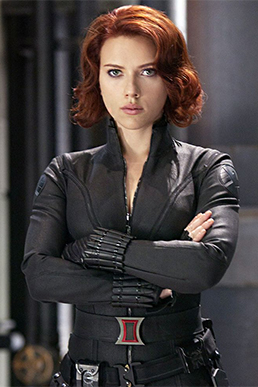
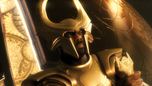

Original Avengers & Core Fallen
 TS
TSTony Stark / Iron Man
Iron Man
DeadSacrificed himself with the Infinity Stones in Avengers: Endgame.
Iron Man (2008) → Endgame (2019)
Character page →
NRNatasha Romanoff / Black Widow
Black Widow
DeadGave her life on Vormir to obtain the Soul Stone in Avengers: Endgame.
Iron Man 2 (2010) → Endgame (2019)
Character page → TB
TBT'Challa / Black Panther
Black Panther
DeadDied before Black Panther: Wakanda Forever, which honors his legacy.
Captain America: Civil War (2016) → Wakanda Forever (2022)
Character page → PM
PMPietro Maximoff / Quicksilver
Quicksilver
DeadKilled defending Clint in Avengers: Age of Ultron.
Avengers: Age of Ultron (2015)
Character page → V
VVision
Vision / White Vision
Bodily dead / active as a ghostHis original body was destroyed by Thanos; White Vision survives in a different state.
Age of Ultron (2015) → WandaVision (2021)
Character page →
HHeimdall
Gatekeeper of Asgard
DeadKilled by Thanos in the opening of Avengers: Infinity War.
Thor (2011) → Infinity War (2018)
Character page → L(
L(Loki (main timeline)
Loki
Dead, but an alternate version existsKilled by Thanos in Avengers: Infinity War. A 2012 variant lives on with the TVA.
Thor (2011) → Infinity War (2018); Loki S1–S2
Character page → G(
G(Gamora (main 2018)
Gamora
Dead, but an alternate version existsSacrificed by Thanos for the Soul Stone. A 2014 variant was displaced into the present.
Guardians (2014) → Infinity War (2018); Vol. 3
Character page →Also Fallen — Guardians' Friends
 YU
YUYondu Udonta
Yondu
DeadGave his life to save Peter in Guardians of the Galaxy Vol. 2.
Guardians 1–2 (2014–2017)
Character page →Lylla
Lylla
DeadKilled in the High Evolutionary's lab, seen in Guardians of the Galaxy Vol. 3.
Guardians Vol. 3 (2023)
Character page →Teefs
Teefs
DeadKilled in the High Evolutionary's lab, seen in Guardians of the Galaxy Vol. 3.
Guardians Vol. 3 (2023)
Character page →Floor
Floor
DeadKilled in the High Evolutionary's lab, seen in Guardians of the Galaxy Vol. 3.
Guardians Vol. 3 (2023)
Character page →Also Fallen — Across the Multiverse
Jane Foster / Mighty Thor
The Mighty Thor
DeadDied of her battle with cancer in Thor: Love and Thunder.
Thor (2011) → Love and Thunder (2022)
Character page →Queen Ramonda
Queen of Wakanda
DeadDrowned during the Wakanda–Talokan war in Wakanda Forever.
Black Panther (2018) → Wakanda Forever (2022)
Character page →Maria Hill
Deputy Director of S.H.I.E.L.D.
DeadKilled in Secret Invasion.
The Avengers (2012) → Secret Invasion (2023)
Character page →Talos
Talos the Skrull
DeadKilled in Secret Invasion.
Captain Marvel (2019) → Secret Invasion (2023)
Character page →A note on statuses: "Dead, but an alternate version exists" covers Loki and Gamora, whose variants live on in other timelines. "Bodily dead / active as a ghost" reflects Vision, whose original body was destroyed while White Vision continues. We do not label Blipped characters, fake-outs or unconfirmed deaths as gone.